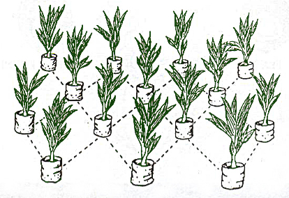
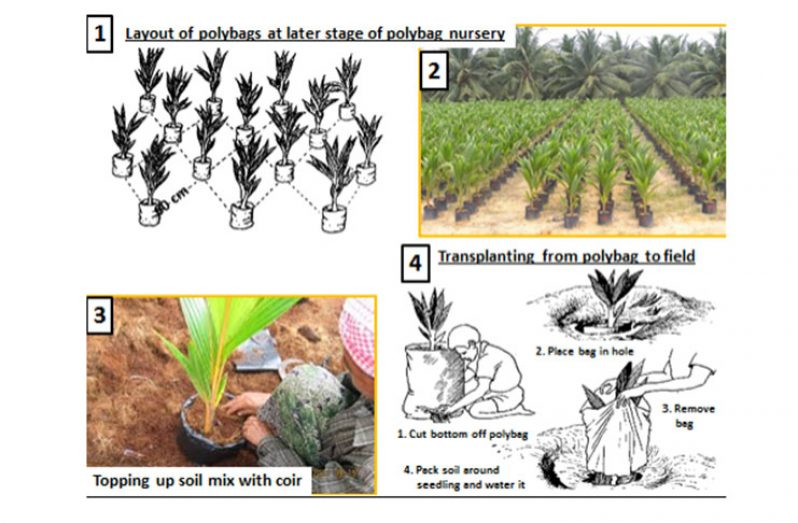
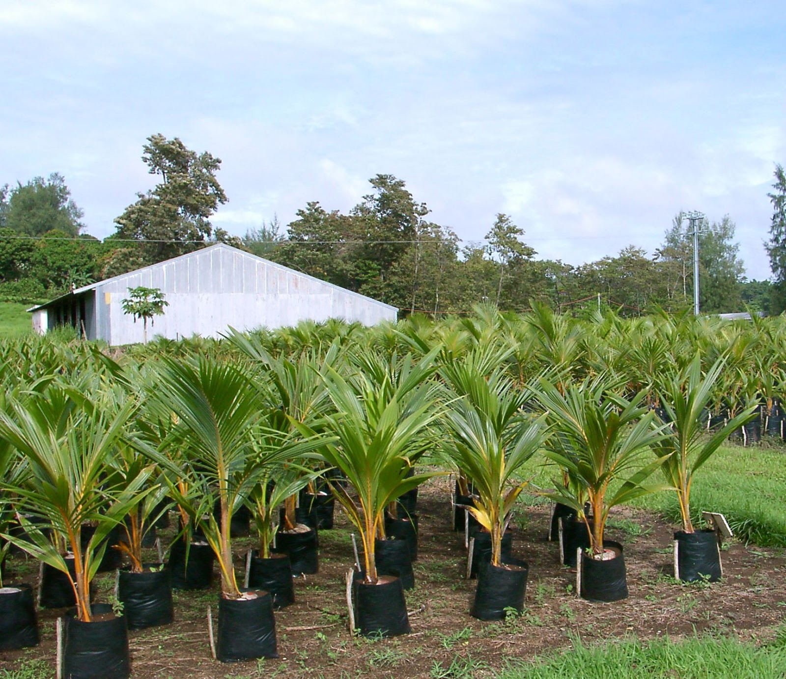

CHAPTER 06
Production of Quality Planting Materials And Nursery Management
Nursery Management
- It is very essential to select only good seedlings in the nursery for field planting
- The reasons are:
- perennial nature of the coconut palm (>60 years)
- and highly heterogeneous populations
- Furthermore, it alone can increase yield by 10 –12%
Selecting Seed Nuts to Raise in Nursery
- Ripe nuts (11 – 12 months) are suitable as seed nuts
- (1) empty (2) very small (Kuruwal) (3) extra large and (4) deformed nuts are rejected from heap (leaving about 80 – 85% seed nuts for laying in seed bed)
- Selected seed nuts:
- either sown immediately
- or stored in heap for about 4 weeks
(about 1.5m high, under shade, covered with dried coconut fronds)
- Nursery should be located on:
- Flat
- and well drained land
- close to reliable water source
Conventional Nursery and After Care of Seedlings
Nursery bed:
- About 250 cm wide (8 ft.)
- Accommodates 5 rows of seed nut (45 cm apart)
- Convenient length
- Raised 15cm above ground
- Seed nuts laid horizontally (15cm apart in shallow trenches of 25cm wide 15cm deep covered with soil to see the surface of seed nut)
- Proximal end of seed nut placed in one direction
- Nuts in adjacent row placed opposite direction and positioned alternatively


Watering:
- Commence following 6 days dry period and continue at 3 day intervals
Mulching:
- With dried coconut fronds, conserve soil moisture and suppress weed growth
Pest: Termite damage is common
- Chemical prevention: (1) dipping seed nuts in 20% chloropyrifos ( 3- 5 ml/l water) or (2) drenching nursery bed with chloropyrifos ( 15 – 25 ml/5 l water/ m2 bed)
- Traditional prevention methods: (1) over-watering (2) burning cow dung on nursery bed (3)mixing soil with paddy husk
Diseases:
- Collar rot
- Caused by deep planting and excessive moisture caused by water logging
- Leaf blight
- Caused by water logging. (Controlled by Copper fungicide)
- Collar rot
Seedling Selection:
- Seed nuts of tall variety sprout in 3 months
- Early germinated seeds produce palms which flower early
Steps for Seedling Selection:
- 5 months after laying 80% seed nuts germinated(All non-germinated seed rejected at this stage)
- 7 months after laying, about 30 – 35% of seedlings rejected based on morphological characters such as:
- Sturdiness of stem
- Minimum girth of 10 cm at collar
- 3 – 4 number of broad dark green leavesshowing signs of early splitting
Different growth stages of conventional coconut nursery
Poly Bags Beedlings and After Care
Pre-nursery:
- Seed nuts are laid in a pre-nursery bed (150cm wide and raised to 15cm ) upright in shallow trenches at close spacing of 15cm between rows and 5cm between seed nuts
- Germinated seed nuts with sprout length 10 -15 cm transferred into poly bags
Poly bags:
- 500 gauge black polythene, 28cm diameter, 40cm high with gusset measuring 15cm, filled with potting mixture (1 part top soil + 2 parts cow dung + 3 parts coir dust/ saw dust)
- Few punch holes made close to bottom to drain excess water
- Sprouted seed nuts planted upright in the center of half-filled bag and potting mixture added up to two-thirds and then lightly pressed
- Space up to edge of bag mulched with coir dust/ saw dust
- Size of poly bag nursery bed: 3 m x 6 m, with 1.5 m between 2 beds
- A bed of this size accommodates 115 seedlings when bags arranged 60 cm x 60 cm x 60 cm triangular manner and later increased to 75cm x 75cm x 75cm
  
Advantages of Poly Bag Seedlings